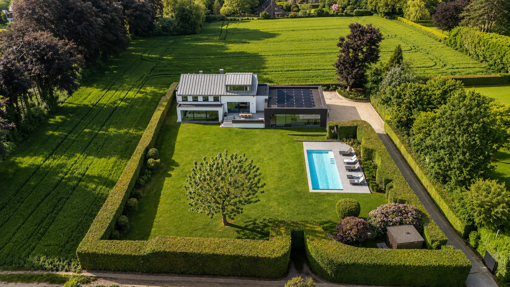
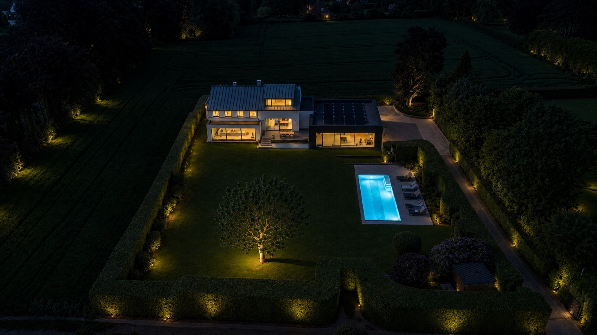

Atmosphère 01
L'aérien.
Au bout d'un cul-de-sac privé, sans aucun vis-à-vis.
La villa occupe un terrain de 2 420 m² (dont 1 900 m² de jardin paysager) au bout d'une allée privée, dans le quartier prisé de la Grande Espinette. Calme absolu, environnement résidentiel de premier plan — à quinze minutes du centre de Bruxelles.
— Grande Espinette · Rhode-Saint-Genèse